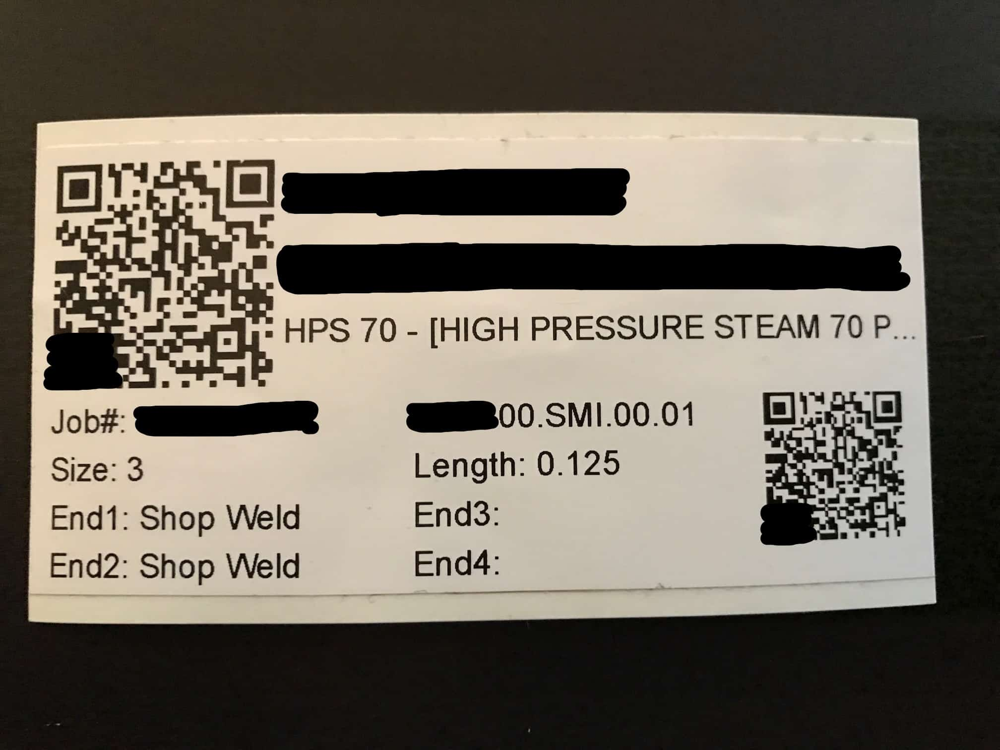

Full-Stack Developer, Team Builder, Trivia Buff, Sand Volleyball Aficionado, Husband, Pet-Dad
US Engineering
US Engineering is a mechanical contractor based in Kansas City, Missouri. I was a web developer intern at USE for 6 months during my Full-Stack developer course. They specialize in manufacturing, installing and servicing mechanical systems in large buildings all around the midwest. Think about any and all mechanical systems in a building: the heating/cooling systems, ductwork, water pumps, etc. That's what USE does and is one of the best in the business. I had a role in the development of a few signature applications. Due to confidentiality, I can only share a broad description of each.
Shop Floor System
Electron based application used on kiosks during the manufacturing process. I played a primary role in developing the component label generation feature and printing functionality. Used SQL, html, js, jQuery and css to create labels with QR codes and relevant project information, that in turn would be printed automatically.
The QR code is generated based on a unique id and each field is populated based on the type of label needed. A user is able to generate one label or hundreds at the click of a button. Each label is formatted to fit on a special 4x2 inch sticker label from a 3rd party label printer.
Project Dashboard
SPA used by project managers to view and analyze many types of project data. Primary role in setting up APIs, developing pages, writing queries and data validation. Used html, css, js, jQuery, knex and SQL along with libraries such as Handsontables, Highcharts and webPopover to create engaging charts, tables and interfaces to filter and view data.
Material Checklist/Sheet Metal Order Form/HR Status Change
These projects I developed solo utilizing Nintex forms and workflows that integrate seamlessly within Sharepoint and Nintex mobile app. Each has a completely different use, function and users.
Powershell
We utilized Sharegate as a migration system to copy and update site pages within Sharepoint. With 70+ projects in our systems, any update to a standardized form or report would have to be copied manually. This process would normally take 90+ minutes depending on the scope of the change. We learned that Powershell could be used to automate this process, so I was able to dive into the documentation and install and learn the basics of Powershell. Within days I had wrote a simple script that start the process and work in the background. This saved development time of at least 90 minutes per week on average.